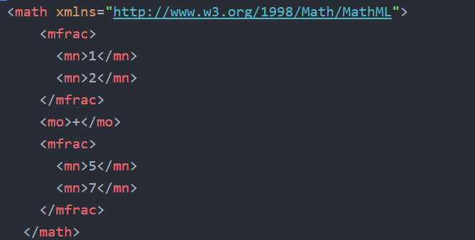

MathML er på en enkel måte forklart et markup language som hjelper deg med å vise struktur og innhold av forskjellige matematiske formler. HTML klarer ikke alene å forstå de matematiske uttrykkene for å sette sammen korrekte semantiske regnestykker, så MathML kommer inn som en krykke for å hjelpe. MathML sin oppgave er å fremvise mattestykkene på websiden.Som vi ser på bildet under, den første biten er den første delen av stykket. Den neste biten er plus tegnet, at det skal legges sammen. den siste biten er den siste biten avmattestykket som skal legges til.
